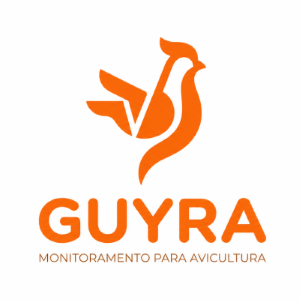

Sobre nós
Entrar
Cadastrar-se
Nossa origem
O Guyra surgiu como um projeto interdisciplinar proposto pela ETEC Bento Quirino. Desenvolvido por 3 estudantes de desenvolvimento de sistemas, o projeto foi criado com o objetivo de auxiliar todo e qualquer tipo de avicultor, visando um sistema, tanto físico quanto digital, acessível, simples e objetivo.
O Guyra tem como objetivo principal auxiliar na criação de galinhas, visando reduzir possíveis danos causados aos animais, tais como doenças, morte e/ou lentidão no desenvolvimento, sendo cada um dos citados problemas graves que podem reduzir drasticamente a qualidade de vida dos animais e o lucro de quem os cria.